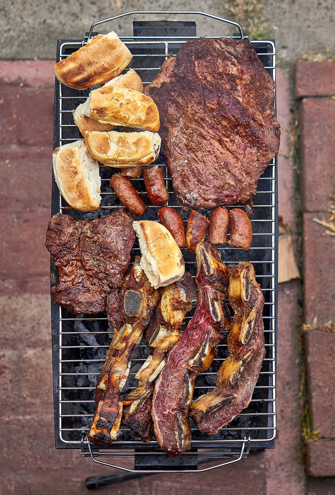
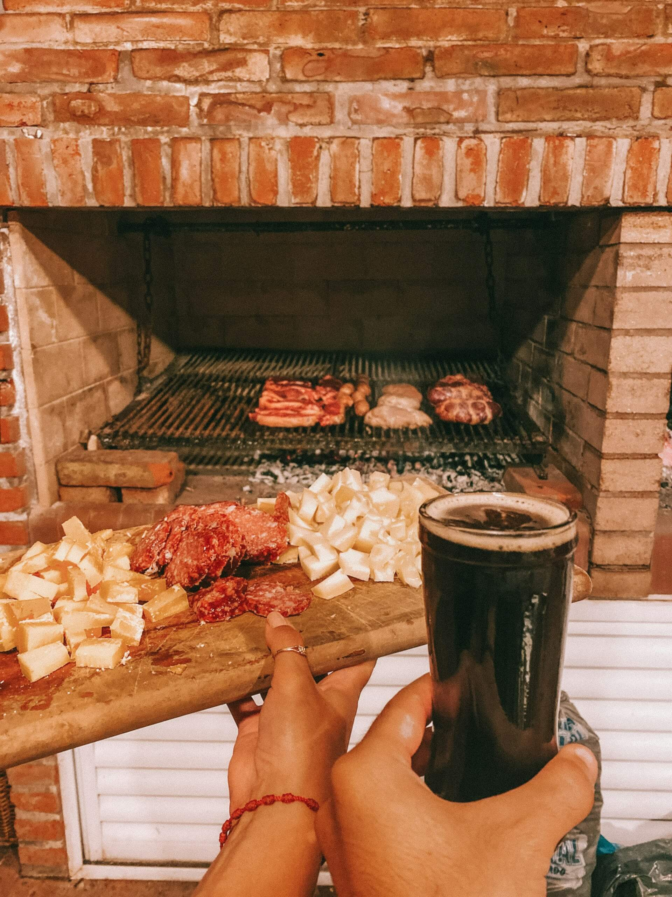
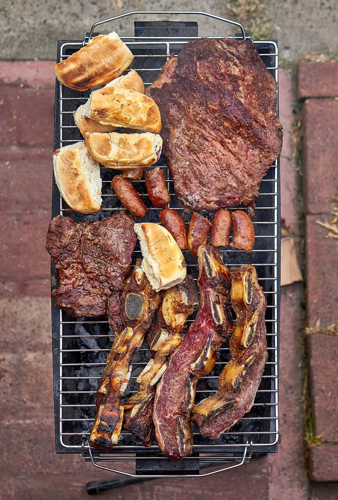
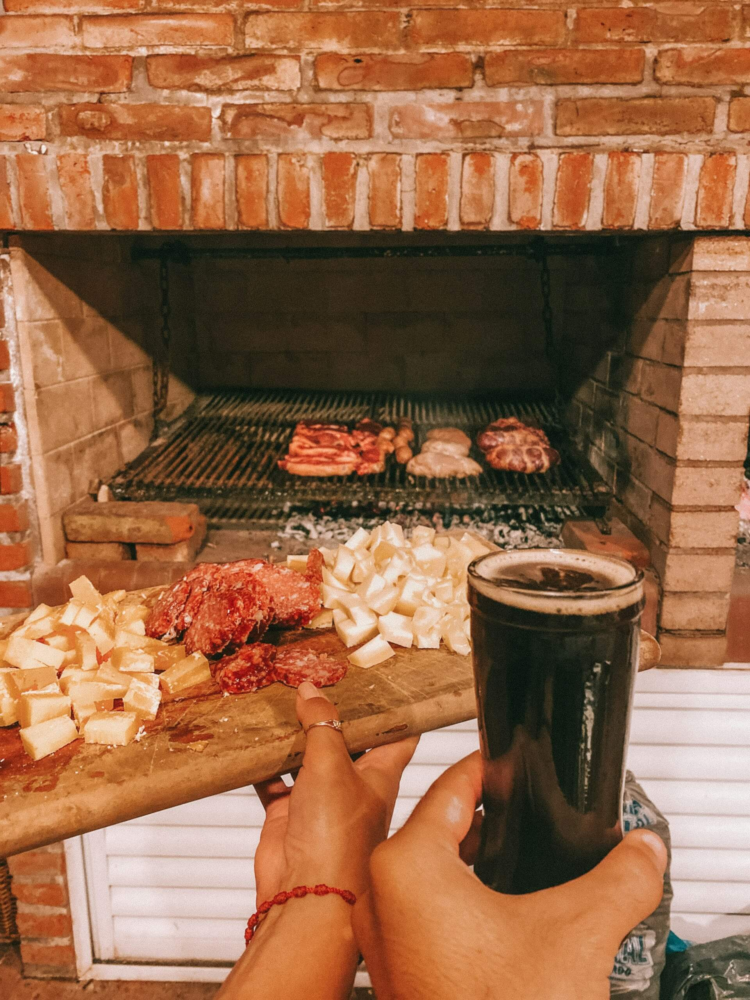

Argentine Cuisine
With Italian and Spanish influences, Argentine cuisine is characterized by its variety of meats, particularly beef, as evident in the popularity of Argentine Steakhouses throughout the world. Grilled veal and pork are also very common. The sauce that accompanies the meat, chimichurri, is one of the best-known delights of Argentine cuisine, and there is no lack of sausages, rich empanadas filled with numerous ingredients, or delicious sweet dishes, such as the famous alfajores. Although in Argentina, you can find different types of drinks, the most widely consumed is mate, the tea infusion that has become a symbol of the country, and whose consumption is a ritual for Argentines.
| Main Courses | Desserts | Drinks |
|---|---|---|
| Asado | Alfajores | Mate |
| Empanadas | Dulce de Leche | Malbec Wine |
| Milanesa | Chocotorta | Fernet |
| Locro | Helado | Quilmes Beer |
| Humita en Chala | Tarta de Manzana | Clerico |
 


